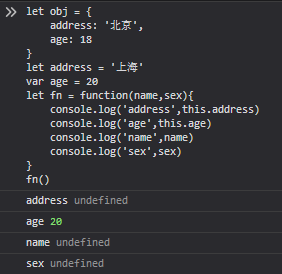
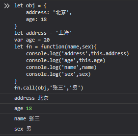
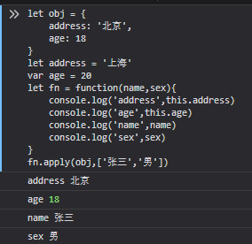
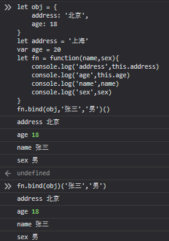

call，apply，bind均是用于改变this指向。
三者相似之处：
1：都是用于改变函数的this指向。
2：第一个参数都是this要指向的对象。
3：都可以通过后面的参数进行对方法的传参。
let obj = {
address: '北京',
age: 18
}
let address = '上海'
var age = 20
let fn = function(name,sex){
console.log('address',this.address)
console.log('age',this.age)
console.log('name',name)
console.log('sex',sex)
}
fn()
在图中可以看到只有age是有值的，直接调用fn方法，this默认指向为window。
address因为是let声明出来的变量，会产生一个做个作用域，所以fn同样是取不到address，只可以取到age。
使用call:

apply:

bind:

call跟apply的相同点：改变this指向后会对函数进行调用。
call跟apply的区别：后续参数call是一个一个传入，apply是将所有参数放到一个数组中进行传递。
bind跟apply跟call的不同：改变this指向后，并不会主动度函数进行调用，需要再手动调用函数。
传参方式有两种：1、跟call相同，将后续参数依次传入。
2、在调用时进行参数的传递
注意点：在严格模式下，即“use strict”
function fn() {
console.log(this);
}
fn()// 普通模式下this是window，在严格模式下this是undefined
fn.call(); // 普通模式下this是window，在严格模式下this是undefined
fn.call(null); // 普通模式下this是window，在严格模式下this是null
fn.call(undefined); // 普通模式下this是window，在严格模式下this是undefinedcall的实现原理，实现一个自己的call方法。
明确call做了哪些事情。
1.改变了this指向
2.传递了要传递的参数
3.主动调用了方法
Function.prototype.myCall = function(...arg){
let obj = [...arg][0] || window//将this要指向的对象赋值给一个新对象
obj.fn = this//给新对象添加新的属性fn为要改变this指向的方法，实现了this的改变，obj.fn的this指向的便是obj了
let result = obj.fn(...[...arg].slice(1))//实现主动调用，并将参数传递
delete obj.fn//删除fn属性，防止破坏原有对象
return result //若方法有返回值将返回值return出去
}call的经典例子：
function fn1() {
console.log(1);
}
function fn2() {
console.log(2);
}
fn1.call(fn2); // 1
fn1.call.call(fn2); // 2fn1.call(fn2); 因为并没有涉及到this所以打印的仍然是1
fn1.call.call(fn2)
fn1.call.call(fn2)//将fn1.call看做要被该边this指向的函数，结合自己实现的call函数
function(...arg){
let obj = [...arg][0] || window//将this要指向的对象赋值给一个新对象
obj.fn = this//给新对象添加新的属性fn为要改变this指向的方法，实现了this的改变，obj.fn的this指向的便是obj了
let result = obj.fn(...[...arg].slice(1))//实现主动调用，并将参数传递
delete obj.fn//删除fn属性，防止破坏原有对象
return result //若方法有返回值将返回值return出去
}.call(fn2)//将里面的this改为fn2，可以看到实际执行的就是fn2函数